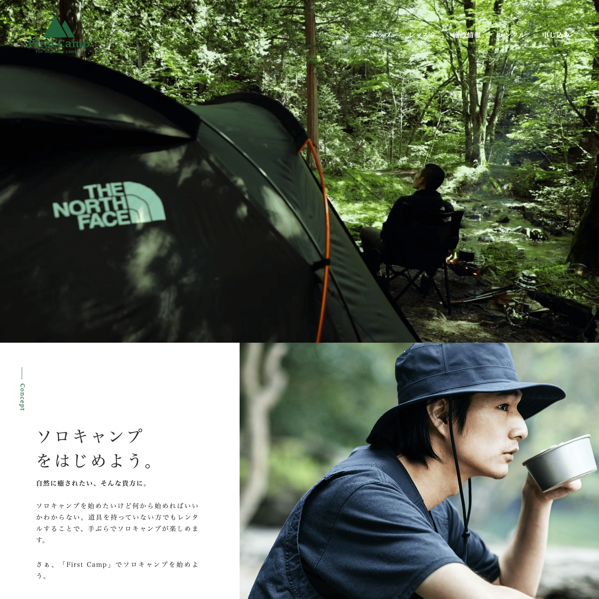

First Camp

- 制作期間
- 2ヶ月(2022年11月~)
- 人数
- 1人
- 担当
- 全て (企画、デザイン、コーディング)
- 使用技術
- HTML, CSS(SCSS), JavaScript(Swiper.js, GSAP)
- 作品概要
- ソロキャンプ未経験者の人に向けたキャンプの楽しみ方や知識、スキルを実践形式で学べるレッスンが受けられるサイトです。コロナ禍の影響で蜜を避けるために、ソロキャンプを始める人が急増していることから、需要があると思い作成しました。ターゲットは30代から40代の都会から離れて自然に癒されたい男性です。
- こだわり
- フッターにお申し込みのボタンを配置してどのページからもすぐに申し込みができるようにしました。サイトデザインの雰囲気をすごく大切にしました。キャンプ未経験者の人に向けたものだったのでサイトに訪れるだけでキャンプの雰囲気が味わえるそんなデザインを意識しました。初めてでも不安にならないようにレッスンを受けている写真やレッスンのページで1日のスケジュール等の掲載して安心して受けてもらえるようにしました。